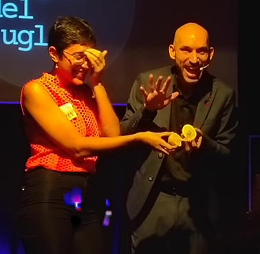
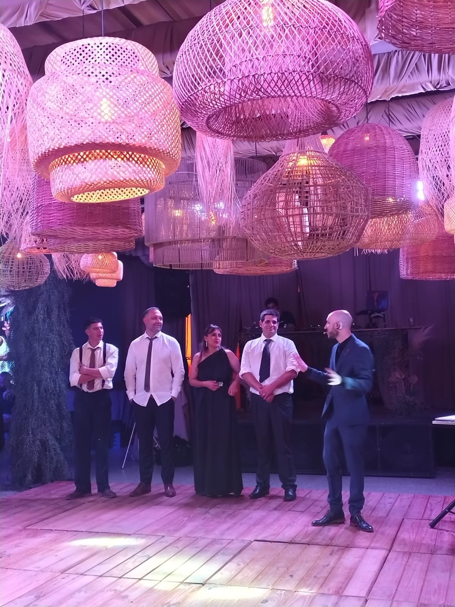

Ilusionismo
Efectos visuales y situaciones imposibles que sorprenden a todo el público.
Un espectáculo moderno, visual y participativo. Sorpresas, decisiones y momentos únicos que cautivan a todo el público.
Descubrir el espectáculo ↓Un espectáculo de salón pensado para compartir una experiencia sorprendente con todos los invitados.
Mati Zaranto presenta un show que combina magia, humor ilusionismo y mentalismo, con efectos visuales, experiencias imposibles y participación del público.
A lo largo de aproximadamente 45 minutos, diferentes espectadores son invitados a participar, tomar decisiones y convertirse en protagonistas de situaciones inesperadas.
El humor y la interacción acompañan el espectáculo de principio a fin, creando un momento especial para disfrutar en conjunto.

Un recorrido por experiencias de ilusionismo y mentalismo que desafían la percepción y despiertan el asombro. Predicciones, decisiones inexplicables y momentos en los que la realidad parece dejar de responder a la lógica.
El público participa, se involucra y descubre que puede ser parte de lo imposible. Cada presentación genera reacciones únicas y momentos que permanecen en la memoria mucho después de que termina el show.
Diferentes momentos y disciplinas se integran en un espectáculo diseñado para mantener la atención, la risa y sorprender de principio a fin.
Efectos visuales y situaciones imposibles que sorprenden a todo el público.
Predicciones, decisiones y experiencias que desafían la lógica y la percepción.
Los invitados suben a escena y forman parte activa de diferentes experiencias.
Interacción y humor elegante que aportan naturalidad y dinamismo al espectáculo.
El espectáculo está pensado principalmente para público adulto y puede incorporarse como momento central de una celebración, un cumpleaños, una cena o un evento empresarial.

Una propuesta para sumar un momento diferente a celebraciones sociales, encuentros privados y eventos empresariales.
Contame qué estás organizando, dónde será y cuántos invitados habrá. Podemos encontrar la mejor manera de incorporar el espectáculo a tu celebración.
Consultar disponibilidad ↗